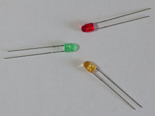

Forward current
IF = (V − VF − VOL) / R
V = 3.3 V, R = 180 Ω
IF = (3.3 V − [1.8 – 2.2 V] − [0 – 0.4 V]) / 180 Ω ≈ 4 – 8 mA
V = 3.3 V, R = 330 Ω
IF = (3.3 V − [1.8 – 2.2 V] − [0 – 0.4 V]) / 330 Ω ≈ 2 – 5 mA
The SLI-343x8 is a series of 3 mm LEDs. It has a rated forward current of 20 mA.

| Red | SLI-343U8RC3F |
| Orange | SLI-343D8C3F |
| Yellow-green | SLI-343M8G3F |
IF = (V − VF − VOL) / R
V = 3.3 V, R = 180 Ω
IF = (3.3 V − [1.8 – 2.2 V] − [0 – 0.4 V]) / 180 Ω ≈ 4 – 8 mA
V = 3.3 V, R = 330 Ω
IF = (3.3 V − [1.8 – 2.2 V] − [0 – 0.4 V]) / 330 Ω ≈ 2 – 5 mA